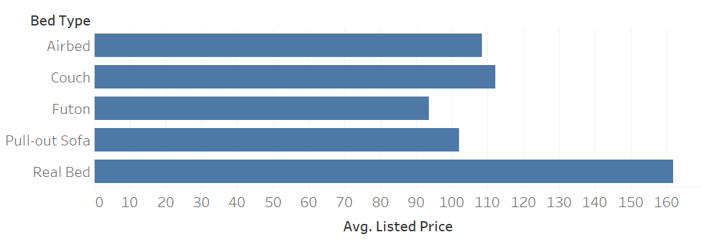
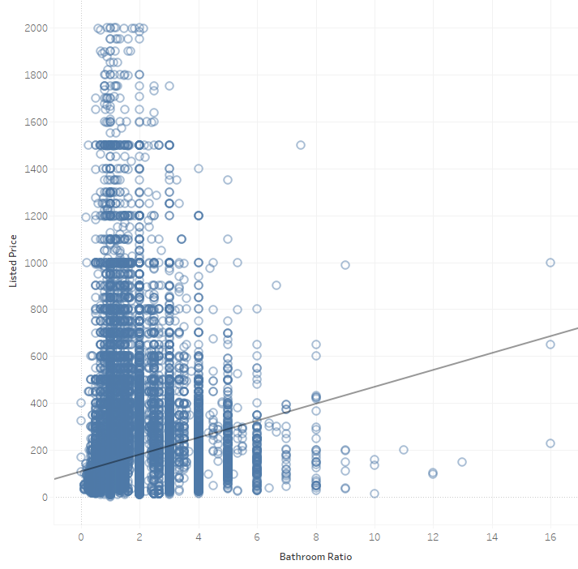

df <- read.csv(file.path("data", "airbnb_full_oa.csv"))Homework 8: ANOVA and Simple Linear Regression
In-Person Sections
Objectives
By the end of this assignment, you will be able to:
- distinguish a one-way ANOVA from a simple linear regression;
- interpret an omnibus ANOVA and relevant post-hoc comparisons;
- interpret a regression slope and fitted equation in context;
- use effect size and Bayes factor in a practical interpretation; and
- complete the five-step process for a project-related analysis.
Resources
- Week 6 and Week 9 slides and interpretation resources
- The
.csvfiles in thedatafolder ano()andslr()fromeco230r- Your project story and candidate hypotheses
1) Review the Worked ANOVA Example
The larger Airbnb dataset is used for the first two hypotheses. Do not change this setup code.
Hypothesis 1 - Worked Example
Statistical story: What relationship, difference, or pattern are you investigating, and why might it matter?
Mean listed price differs across bed types. Property owners may use this information when describing and furnishing a listing.
Estimate or plot: What does the descriptive evidence suggest? If there were no uncertainty, what action would the business take?

Average listed price by bed type. Properties listing a real bed have the highest mean listed price. If there were no uncertainty, owners would prioritize a real bed when feasible while recognizing that bed type may also reflect other property characteristics.
Test and hypotheses: Which test is appropriate? State \(H_0\), \(H_A\), and the alpha level.
Test: one-way ANOVA using
ano()\(H_0\): Population mean listed price is equal across all bed types.
\(H_A\): At least one population mean listed price differs by bed type.
\(\alpha = 0.05\)
h1 <- df |>
ano(listed_price ~ bed_type)
print(h1)Statistical interpretation: What does the result say about the evidence against \(H_0\)? Report the omnibus result and relevant post-hoc comparisons in context.
F(4,731.84) = 404.918, p < .001, ξ = 0.365, bf10 = 4.227e+51
Because the omnibus p-value is below 0.05, reject \(H_0\). Mean listed price is not equal across all bed types. The post-hoc results identify which pairs provide evidence of a difference; they should be reported from the current output rather than assumed from the plot alone.
Practical interpretation: How large and consequential is the result for a general business audience? Use the effect size and Bayes factor when they help support the conclusion.
# Post hoc comparisons for the Step 5 interpretation.
print(h1$post_hoc_analysis) Difference P.Value
Airbed-Couch -0.7802336 0.9500000
Airbed-Futon -1.0598392 0.9500000
Airbed-Pull-out Sofa -13.8109676 0.0001990
Airbed-Real Bed -52.7118173 0.0000000
Couch-Futon -0.2796056 0.9500000
Couch-Pull-out Sofa -13.0307340 0.0200000
Couch-Real Bed -51.9315837 0.0000000
Futon-Pull-out Sofa -12.7511285 0.0000347
Futon-Real Bed -51.6519781 0.0000000
Pull-out Sofa-Real Bed -38.9008496 0.0000000Real-bed listings have the highest sample mean. The reported effect size indicates whether between-group differences explain a small or substantial share of price variation, while the Bayes factor indicates the strength of evidence for those differences. Bed type may matter to pricing, but the observational data do not establish that changing a bed alone will cause a price increase; size, location, and amenities may also differ across groups.
2) Complete the Regression Interpretations
Hypothesis 2 - Complete Steps 4-5
Statistical story: Listed price has a linear relationship with bathroom ratio, defined as beds per bathroom.
Estimate or plot: The plot suggests a positive relationship: listings with more beds per bathroom tend to have higher prices.

Listed price by bathroom ratio. Test and hypotheses:
Test: simple linear regression using
slr()\(H_0: \beta_1 = 0\): Bathroom ratio has no linear association with listed price in the population.
\(H_A: \beta_1 \neq 0\): Bathroom ratio has a linear association with listed price in the population.
\(\alpha = 0.05\)
h2 <- df |>
filter(bathrooms > 0) |>
mutate(bathroom_ratio = beds / bathrooms) |>
slr(listed_price ~ bathroom_ratio)
print(h2)Statistical interpretation: What does the result say about the evidence against \(H_0\)? Report the slope, direction, p-value, and uncertainty in context.
F(2,72653) = 2199.873, p < .001, R2 = 0.029, bf10 = Inf
Your response:
Practical interpretation: Explain the fitted equation for a general business audience. Interpret the slope, assess the magnitude and usefulness of the relationship, and use the effect size or Bayes factor when available. Do not present the association as proof that bathroom ratio causes price.
# Fitted regression equation for the Step 5 interpretation.
print(h2$linear_regression_model)[1] "y = 35.97x + 109.82"Your response:
Submission
Render this document and submit Homework_08_IP.pdf in Canvas. The PDF must contain your two interpretations for Hypothesis 2, all five steps for Hypothesis 3, and the code you attempted.
Checklist
Grading focus: Your work will be evaluated for correct ANOVA or regression reasoning, contextual interpretation, appropriate use of effect size and Bayes factor, and a sincere project-related analysis attempt.